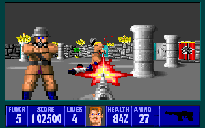

Wolfenstein 3D
Rendering feats of yesteryear
Wolfenstein 3D
Hardware
- 1992
- 12MHz 16-bit 286
- 33/66MHz 486DX2 just released $799 ($1400 in today's)
- No video acceleration
- No floating point (until 486)
Raycasting

By Kieff - Own work, Public Domain
https://commons.wikimedia.org/w/index.php?curid=20389654
https://commons.wikimedia.org/w/index.php?curid=20389654
Wolf3D's raycaster
- Flat plane
- Square grid only
- Untextured floor and ceiling
Map
Map
Intersections
Math #1
Geometry
- sin(θ) = opp / hyp
- cos(θ) = adj / hyp
- tan(θ) = opp / adj
Geometry
Math #2
For each ray: setup
- θ is ray direction
x,yare player tile posdx,dyare offset within tile- Depending on θ:
tileStepX,tileStepY= ±1xStep,yStep= tan(θ), 1/tan(θ) [δx, δy]xIntercept= x + dx + -dy / tan(θ)
yIntercept= y + dy + dx/tan(θ)
For each ray: trace
for (;;) {
while (yIntercept < y) { // < or > depending on yStep
if (map[x][yIntercept>>16]) goto hitVert;
x += tileStepX;
yIntercept += yStep;
}
while (xIntercept < x) { // < or > depending on xStep
if (map[xIntercept>>16][y]) goto hitHoriz;
y += tileStepY;
xIntercept += xStep;
}
}
Distance
- p = d cos(φ)
- φ = θ - β
- p = d cos(θ - β)
Math #3
p = d cos(φ)
φ = θ - β
p = d cos(θ - β)
cos(A - B) ≡ cos(A) cos(B) + sin(A) sin(B)
p = d [ cos(θ) cos(β) + sin(θ) sin(β) ]
p = d cos(θ) cos(β) + d sin(θ) sin(β)
Distance
Δx = d cos(θ)
Δy = d sin(θ)
Δy = d sin(θ)
Math #3
p = d cos(φ)
φ = θ - β
p = d cos(θ - β)
cos(A - B) ≡ cos(A) cos(B) + sin(A) sin(B)
p = d [ cos(θ) cos(β) + sin(θ) sin(β) ]
p = d cos(θ) cos(β) + d sin(θ) sin(β)
Δx = d cos(θ)
Δy = d sin(θ)
Δy = d sin(θ)
p = Δx cos(β)
+ Δy sin(β)
Distance
p = Δx cos(β)
+ Δy sin(β)
Scaling
- Wall height = constant / p
- Pre-create scale function per possible height
- (Ab)use VGA memory planes
Sprites
- Distance calculated similarly to walls
- Drawn back-to-front
- Scaled similarly to walls
- Each column compared to nearest
- Sprites "compiled" into runs of opaque pixels